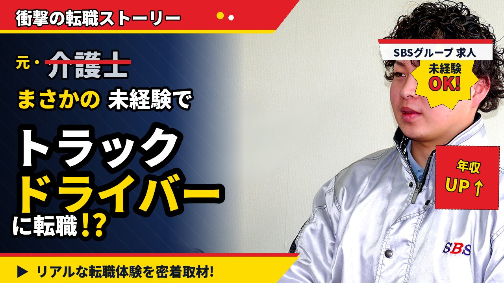

RECRUIT — VOICE
STAFF INTERVIEW VIDEOS
未経験で入社した社員のリアルな転職ストーリーや、
日々の仕事のやりがい・本音を、YouTube動画でお届けします。
公式YouTubeチャンネルでは、ドライバー・倉庫スタッフ・配車係・事務スタッフなど、様々な職種の社員インタビューを公開中。
文字だけでは伝わらない「人の温度感」を、動画でぜひご覧ください。

介護士として5年勤めた後、思い切ってトラックドライバーへ転職した佑介さん（28歳）。なぜ介護からドライバーへ？年収は本当にUPした？未経験スタートの不安はどう乗り越えた？リアルな転職体験を密着取材しました。